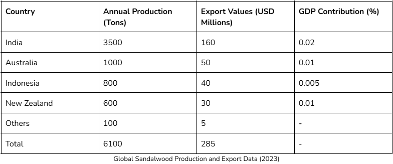
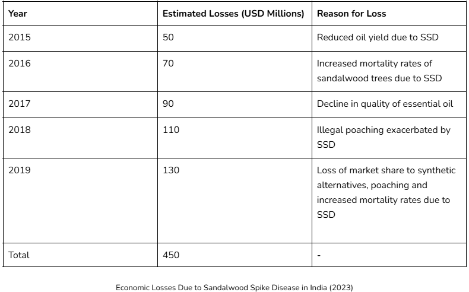
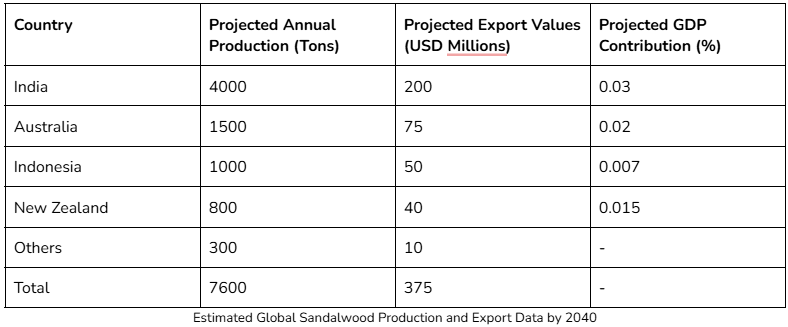

Sandalwood spike disease (SSD) is likely to be the most destructive of known diseases to infect Indian sandalwood, Santalum album L., which is valued for its wood and scented essential oil derived from the heartwood (10.22364/eeb.14.26). SSD is a serious disease of S. album which has been investigated for over 120 years. SD is characterised by chlorosis, a reduction in leaf size, and shortened internodes, causing leaves to become crowded on twigs with a “bushy” appearance and as stems stand out stiffly, they acquire a spike-like appearance. SSD was first reported at Coorg, South India, in 1899, and over a million trees were removed because of the disease in the Coorg and Mysore regions of India between 1903 and 1916 [1].
Sandalwood trees are highly susceptible to SSD caused by Candidatus Phytoplasma asteris, a bacteria. Phytoplasma are intracellular parasites that inhabit the nutrient-rich cytoplasm of phloem sieve cells in infected plants and haemolymph of insect vectors.It produces the effector proteins, SAP11 and SAP05, which cause a multitude of symptoms like reduced immunity, leaf dysplasia, floral dysplasia, dwarfism, hormonal imbalance, etc [2].
In the cosmetic and fragrance industries, sandalwood is one of the important and frequently used plants. Sandalwood is one of the most important medicinal plants because, aside from its use in cosmetics and perfumes, it has a wide range of therapeutic benefits [3]. While India is a major producer of sandalwood, global demand often exceeds supply, leading to high prices and interest from other countries in commercial cultivation. In India, government policies have been amended to encourage sandalwood cultivation on private lands, aiming to boost production and meet market demand [4].
Phytoplasmas are transmitted by phloem-feeding insects, such as leafhoppers. The phytoplasmas then reside in the insect's midgut, haemocytes, and salivary glands. When the insect feeds on a plant, it introduces the phytoplasma into the plant's phloem. Phytoplasmas are phloem-limited, meaning they only reside in the phloem tissues of the plant. Once inside the plant, the phytoplasma multiplies within the phloem tissues, spreading throughout the plant. Phytoplasmas secrete effector proteins, such as SAP11, which target and destabilize host plant transcription factors (i.e. TCP2), leading to altered plant development and defence mechanisms [5],[6].

Our project aims to combat Sandalwood Spike Disease (SSD) by deploying a decoy TCP (AtTCP-2), a member of the TCP family of transcription factors that regulate plant growth and development, through engineered Bacillus subtilis 168. Our designed AtTCP-2 has demonstrated high binding efficiency to SAP11, an effector protein secreted by Candidatus Phytoplasma asteris, a bacteria responsible for SSD [7].
To achieve this, we introduced a modified AtTCP-2 gene into B. subtilis 168, ensuring its stable expression and secretion. This strategy aims to prevent the interaction between SAP11 and the plant’s endogenous TCP proteins, thereby mitigating pathogen-induced developmental disruptions [8].
We used growth kinetics and interaction assays to evaluate the effectiveness of AtTCP-2 in plants after optimizing its design using in-silico binding affinity investigations. Our objective was to create a biocontrol method that, by maximizing AtTCP-2 expression and delivery, disrupts the pathogenic activity of SAP11 and provides a sustainable alternative for SSD treatment.
Furthermore, we utilized agricultural drones equipped with a sophisticated database-driven analysis system. These drones precisely identified plants displaying disease symptoms by comparing the pre-fed dataset with real-time imagery of sandalwood trees. Once infected trees were detected, they were tagged for targeted intervention, allowing us to apply our AtTCP-2-based remedy in real time through a foliar spray. By ensuring early detection and accurate application, this integrated strategy maximized efficiency and minimized environmental impact.
This initiative was motivated by the pressing need to find a long-term solution to stop Sandalwood Spike Disease (SSD), which is endangering sandalwood populations. Existing control strategies have serious disadvantages, including heat therapy, antibiotic treatments, and the removal of affected trees [10]. The removal of trees decreases biodiversity and the production of sandalwood, and the use of antibiotics can result in antibiotic resistance, which affects the effectiveness of subsequent treatments. Heat therapy is expensive and unsuitable for widespread use, despite its occasional benefits. These difficulties show that a focused, environmentally responsible strategy is required.
Our synthetic biology-based method offers a natural and precise alternative by engineering Bacillus subtilis 168 to produce AtTCP-2, a decoy protein that binds to the SAP11 effector, preventing damage to the plant’s growth-regulating TCPs. Unlike chemical treatments, this method does not contribute to antibiotic resistance, minimizes environmental impact, and can be easily applied through a foliar spray. By using genetic engineering to enhance microbial biocontrol, our approach provides a sustainable, scalable, and effective solution to protect sandalwood trees while preserving their ecosystem.
Sandalwood, particularly Santalum album, is a highly valued tree species known for its aromatic heartwood and essential oil.Sandalwood is one of the most valuable tree species in the world and is commonly found in India, Australia, South East Asia, Hawaii and the Pacific Islands.
It is widely used for cultural, ritual, pharmaceutical and perfumery purposes all over the world. Sandalwood is distributed all over India covering 9,600 sq. km, however 90% of the population is found in the southern part of India, particularly in Karnataka (5245 km2) and Tamil Nadu (3045 km2). India stands as the world's largest exporter of sandalwood accounting for 90% of global production of the same [12]. However, the emergence of Sandalwood Spike Disease (SSD), caused by phytoplasma infections, poses a significant threat to sandalwood production. It has been reported that about 1-5% of plant death is caused due to this disease [13]. The disease has resulted in Sandalwood (S. album) being classified as the vulnerable class in the International Union for Conservation of Nature (IUCN) Red List.
SSD in Karnataka has resulted in the growing stock being reduced to 25 percent of its initial level. In 1919, the disease caused an annual loss of 400,000 Indian rupees in the state of Mysore (Hole 1919). Reports indicated that in 1903, only 10–15 percent of sandalwood survived in Mysore and Hunsur taluk areas in a total area of 210 hectares of sandalwood. Following this, SSD died down till 1980. Since 1990, SSD increased once again, and reduced the density of sandalwood in reserves from 24.4% to 1.92% in Mayanoor.
Due to increase in Sandalwood production across the world, risk of SSD is also increasing. Finding a viable solution to this disease could save livelihoods and reduce economic losses.
The global sandalwood market is characterized by high demand, with estimates suggesting an annual requirement of 5,000 to 6,000 tons of sandalwood [14],[15]. India is the largest producer, accounting for more than two-thirds of this demand. The following table summarizes the production of sandalwood in key countries:
Sandalwood Spike Disease has led to significant economic losses due to the decline in tree health and productivity. The disease affects the biochemical pathways responsible for essential oil production, resulting in lower oil yield and quality. The following table outlines the estimated losses caused by SSD in India [16].
The economic impact of SSD extends beyond direct losses in production. The decline in sandalwood resources affects the livelihoods of farmers and workers in the sandalwood industry. The following points summarize the economic implications:
Future estimations suggest that with improved management practices and potential increases in plantation areas, the global sandalwood market could stabilize. However, this will depend heavily on the successful management of SSD and conservation efforts. The following table provides a projection of sandalwood production and economic contributions by 2040 [15],[17]:
Sandalwood Spike Disease poses a significant threat to the sandalwood industry, impacting production levels, economic viability, and the sustainability of sandalwood resources globally. The interplay between disease management, conservation efforts, and market dynamics will be crucial in determining the future of sandalwood cultivation and its associated economic benefits. Without effective interventions, the decline of sandalwood resources may continue, leading to further economic losses and ecological devastation.
In conclusion, our project seeks to:
SPONSORS

CONTACT US
Email: manipalbiomachines.igem@gmail.com
Address: Project laboratory, Academic Block-2, Manipal Institute of Technology, MAHE, Eshwar Nagar, Manipal, Udupi, Karnataka, India - 576104